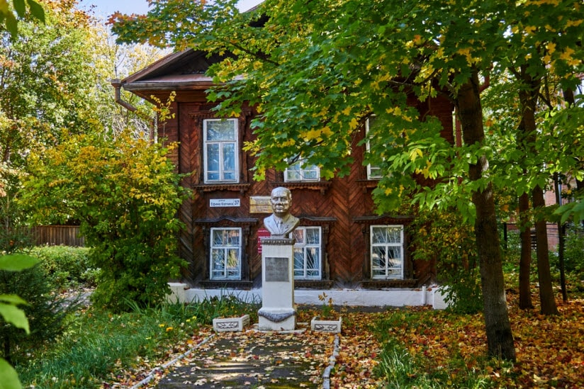
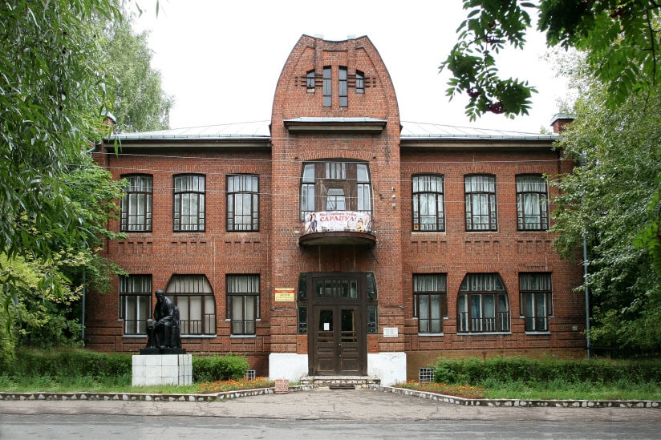
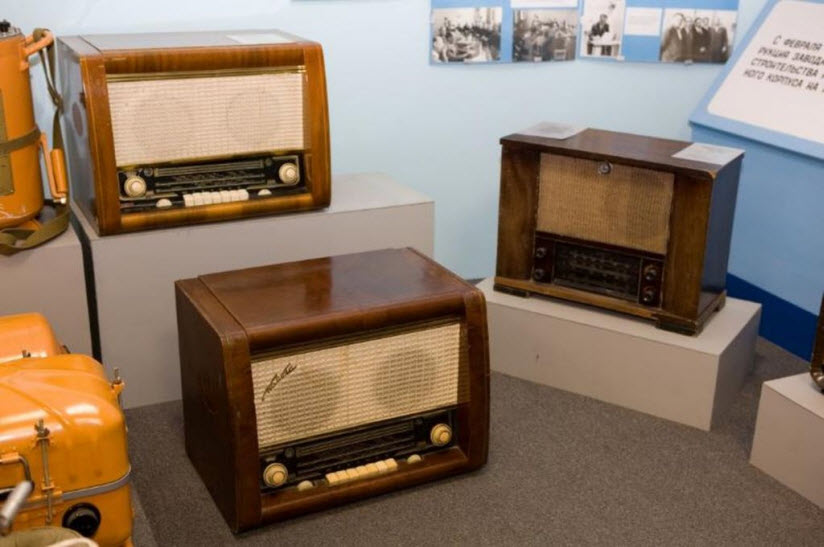
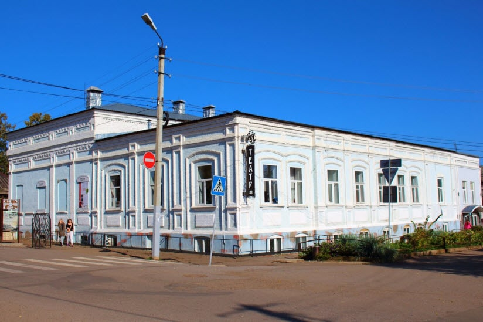
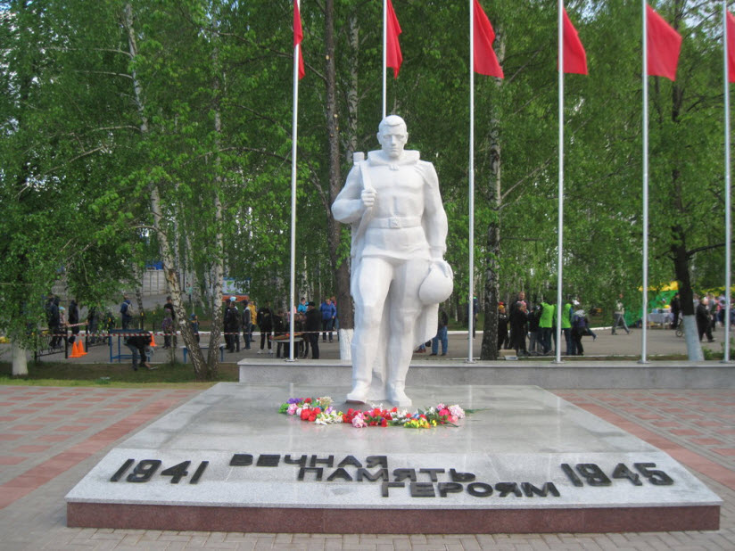
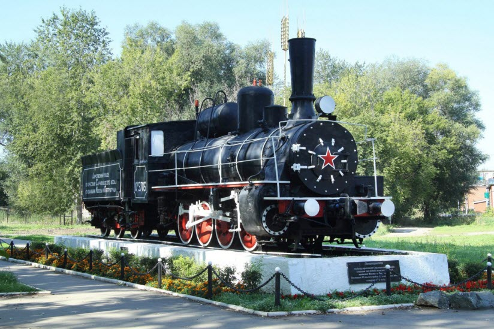

Какие достопримечательности посетить
МКПО и ВУЗЫ Удмуртии
Куда сходить погулять
Где поесть
Где остановиться
Menu
Достопримечательности Сарапула

Музей академика Мельникова
×

Музей истории и культуры Среднего Прикамья
×

Музей радиозавода
×

Драматический театр
×

Памятник неизвестному солдату
×

Паровоз «ОВ-3705»
×
Памятник узникам Баржи смерти
×
Дача Башенина
×